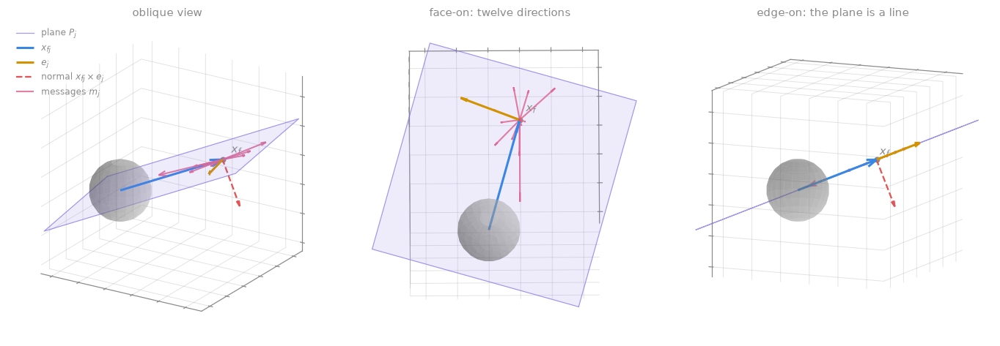
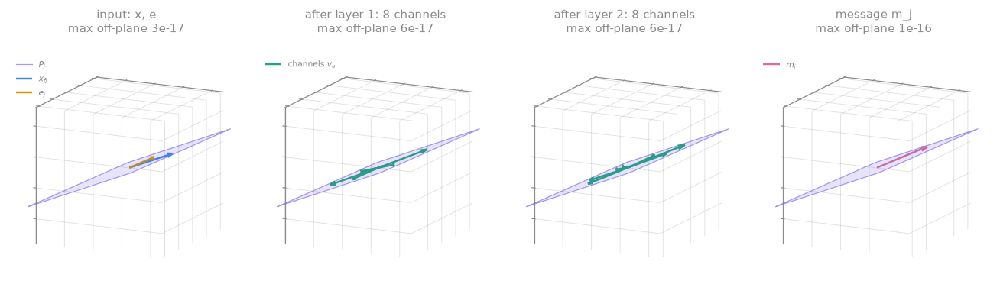
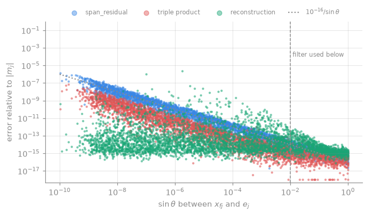
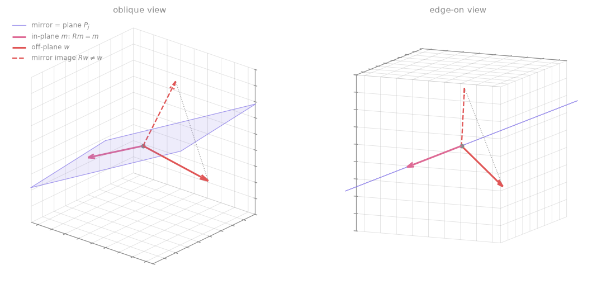
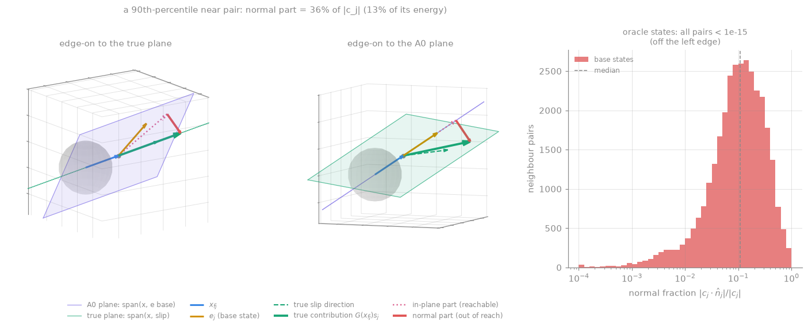
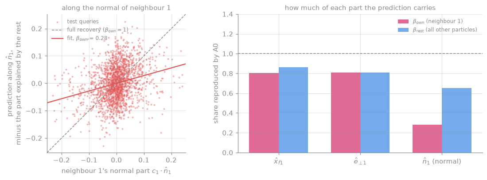

Every message lies in span(x, e)#
What you will learn
Why every A0 message has the form \(\mathbf m_j = a_j\,\mathbf x_{fj} + b_j\,\mathbf e_j\). You will prove it layer by layer, and then rebuild A0 so that it computes only the two numbers \(a_j, b_j\).
How to verify the property in float64, on random inputs and on trained weights, with
span_residual, with the triple product and with an exact reconstruction. You will also see why all three need a filter on nearly parallel inputs, and how a badly normalised test can pass for the wrong reason.Why this form is the most general one a single pair can produce under \(O(3)\), and why the cross product \(\mathbf x_{fj}\times\mathbf e_j\) is excluded only once reflections are included.
What the property costs. A neighbour can never push the flow along \(\mathbf x_{fj}\times\mathbf e_j\), and on the toy this matters when the state direction is wrong. Other neighbours’ messages make up only a small part of it, because their coefficients see only their own pair.
Prerequisites: Lesson 02a (the inputs and the A0 architecture) and
Lesson 02b (the two branches layer by layer). For polar vectors (1o), pseudovectors
(1e) and why a cross product is a pseudovector, see the
MolSSI e3nn course [The Molecular Sciences Software Institute (MolSSI), 2024].
Lesson 02a measured this property in passing. Here we prove it, find its limits and see what it means for the flow.
import os, time
import numpy as np
import torch
import matplotlib.pyplot as plt
from course_utils import toy_data as td
from course_utils.equivariance import (check_equivariance, check_invariance, random_o3, report,
span_residual)
from course_utils.models import MiniA0, MiniA0E3nn, PairMLP, copy_parameters
from course_utils.plotting import PALETTE, INK
from course_utils.training import train, split_by_snapshot
torch.set_num_threads(min(4, os.cpu_count() or 1))
T0 = time.time()
def check(name, err, tol=1e-12, what=""):
"""Print a PASS/FAIL line, and stop the notebook if the check fails."""
print(report(name, err, tol, what))
assert err < tol, f"{name}: {err:.2e} >= {tol:.0e}"
KINDS = ("scalar", "vector", "vector") # argument kinds of (scalars, e_j, x_fj)
C_X, C_E, C_M, C_N, C_P = PALETTE[0], PALETTE[5], PALETTE[4], PALETTE[6], PALETTE[3] # x, e, m, normal, plane
The 3D figures in this lesson share a few drawing helpers. They draw arrows, a translucent patch of a plane and a sphere, and they can set an edge-on camera. Looking along a direction that lies in the plane makes the plane collapse to a line on screen. If every message stays on that line, it lies in the plane.
1. The claim, in one picture#
Take one neighbour \(j\) of a query point \(\mathbf x_f\). A0 receives two vectors for it: the offset \(\mathbf x_{fj} = \mathbf x_f - \mathbf r_j\) and the state direction \(\mathbf e_j\). These two vectors span a plane
The span property says that the message of neighbour \(j\) always lies in this plane:
where \(a_j\) and \(b_j\) are numbers that do not change under rotations or reflections (they are invariants). The network decides only these two numbers. It can never point the message out of the plane, whatever its weights are. Out of the plane means along the plane’s normal, which is the direction of the cross product \(\mathbf x_{fj}\times\mathbf e_j\).
We test the claim on one pair, using twelve A0 networks with different random weights:
x1 = np.array([1.6, 0.5, 0.7]) # offset from the centre of j to the query point
e1 = unit(np.array([0.35, -1.0, 0.15])) # state direction of j (roughly "down")
s1 = torch.tensor([[[1.0, 2.0, 0.1]]], dtype=torch.float64) # [|q_j|, density ratio, phi_j]
X1 = torch.tensor(x1)[None, None]
E1 = torch.tensor(e1)[None, None]
msgs1 = []
for seed in range(12):
torch.manual_seed(seed)
net = randomize_biases(MiniA0(width=16, depth=2).double(), seed)
with torch.no_grad():
msgs1.append(net.messages(s1, E1, X1)[0, 0].numpy())
msgs1 = np.array(msgs1)
res1 = span_residual(torch.tensor(msgs1), X1[0].expand(12, 3), E1[0].expand(12, 3))
n1 = np.cross(x1, e1)
check("12 random A0 nets: distance of m_j from P_j", float(res1.max()), 1e-12)
print("normal component m . (x cross e) / (|m||x cross e|):",
f"{np.abs(msgs1 @ n1 / (np.linalg.norm(msgs1, axis=1) * np.linalg.norm(n1))).max():.1e}")
PASS 12 random A0 nets: distance of m_j from P_j: max error 2.1e-15 (tol 1e-12)
normal component m . (x cross e) / (|m||x cross e|): 2.2e-15
The neighbour sits at the origin and the blue arrow is \(\mathbf x_{fj}\). Every other arrow starts at the query point \(\mathbf x_f\), as in all the 3D figures of this lesson: the yellow arrow is \(\mathbf e_j\), the twelve pink arrows are the messages (scaled by one common factor), and the dashed arrow is the normal \(\mathbf x_{fj}\times\mathbf e_j\). The left panel is an oblique view. The middle panel looks straight down the normal: the twelve messages point in twelve different directions, all inside the plane. The right panel looks edge-on: the plane becomes a line, and the twelve messages collapse onto it, while the normal sticks out.

The animation below shows the same idea for a whole neighbourhood. Each neighbour has its own plane, and every plane passes through the query point. The messages add up tip to tail, and the total \(\mathbf u_f = \sum_j\mathbf m_j\) lies in none of the planes. Section 6 comes back to that last point.
Animation S2, the span plane. One neighbour first: the offset \(\mathbf x_{fj}\) (blue), the state direction \(\mathbf e_j\) (yellow) and the plane through particle \(j\) that they span, which passes through the query point. The message \(\mathbf m_j\) (pink) is a combination of \(\mathbf x_{fj}\) and \(\mathbf e_j\) whose two coefficients come from an MLP of invariant inputs. As the weights change, the message sweeps around but never leaves the plane; seen edge-on, the plane is a line and the message slides along it. Two more neighbours follow, each with its own plane through the query point. Their messages add tip to tail, and the total \(\mathbf u_f\) (teal) lies off the planes. The clip is drawn on a dark stage in both page themes. Explore the same toy in 3D: open the interactive version in a new tab, or show it here:
Interactive 3D version: every A0 message lives in span(x_fj, e_j) (toy)
2. Three ways to leave the plane#
Before we prove the property, we look at what it rules out. Here are three small changes to A0, each of which lets a message leave \(P_j\). We test each one for its distance from the plane and for \(O(3)\) equivariance. All the checks use random inputs in float64.
A vector bias. Add a constant vector \(\mathbf c\) to every message. Linear layers in ordinary networks have a bias, so this is the natural mistake to make.
A cross product. Add \(\gamma\,s_{j1}\,(\mathbf x_{fj}\times\mathbf e_j)\), where \(s_{j1} = \lvert\mathbf q_j\rvert\) is an invariant. This is what an e3nn tensor product \(1o\otimes 1o\to 1e\) would make available.
Another neighbour’s direction. Add \(\gamma\,(\mathbf x_{fj}\cdot\mathbf x_{fk})\,\mathbf x_{fk}\), where \(k\) is the next neighbour in the list.
gen = torch.Generator().manual_seed(7)
B, M = 32, 8
S = torch.rand(B, M, 3, generator=gen, dtype=torch.float64) * torch.tensor([2.0, 3.0, 0.3], dtype=torch.float64)
E = torch.randn(B, M, 3, generator=gen, dtype=torch.float64)
E = E / E.norm(dim=-1, keepdim=True)
X = 2.0 * torch.randn(B, M, 3, generator=gen, dtype=torch.float64)
torch.manual_seed(0)
a0 = randomize_biases(MiniA0(16, 2).double(), 0)
c_bias = torch.tensor([0.3, -0.2, 0.5], dtype=torch.float64)
variants = {
"A0": lambda s, e, x: a0.messages(s, e, x),
"1. vector bias": lambda s, e, x: a0.messages(s, e, x) + c_bias,
"2. cross product": lambda s, e, x: a0.messages(s, e, x) + 0.3 * s[..., :1] * torch.linalg.cross(x, e),
"3. neighbour k's direction": lambda s, e, x: a0.messages(s, e, x)
+ 0.3 * (x * x.roll(-1, 1)).sum(-1, keepdim=True) * x.roll(-1, 1),
}
def try_check(f, proper, name):
try:
err = check_equivariance(lambda s, e, x: f(s, e, x).sum(1), (S, E, X), KINDS, proper=proper,
verbose=False, name=name)
return f"pass ({err:.0e})"
except AssertionError as exc:
return "FAIL (" + str(exc).split("error ")[1].split(" >=")[0] + ")"
print(f"{'variant':28s} {'median dist. from P_j':>22s} {'O(3) check':>18s} {'SO(3) check':>18s}")
with torch.no_grad():
for name, f in variants.items():
res = span_residual(f(S, E, X), X, E)
print(f"{name:28s} {float(res.median()):22.1e} {try_check(f, False, name):>18s} "
f"{try_check(f, True, name):>18s}")
variant median dist. from P_j O(3) check SO(3) check
A0 3.8e-16 pass (1e-15) pass (1e-15)
1. vector bias 4.9e-01 FAIL (1.704e+00) FAIL (1.661e+00)
2. cross product 1.0e+00 FAIL (2.175e+00) pass (7e-16)
3. neighbour k's direction 4.7e-01 pass (9e-16) pass (9e-16)
Each variant breaks the property, and the checks tell the three apart:
The vector bias fails both checks. A constant vector picks out a preferred direction in space. This is the failure we met in Lesson 00, and it is why A0’s vector layers have no bias.
The cross product passes the rotation-only check and fails once reflections are included. The cross product of two polar vectors rotates like a vector but does not flip under inversion. It is a pseudovector (
1e), and adding it to a polar vector gives something that is neither. If we required only \(SO(3)\), the general message would be \(a\,\mathbf x_{fj} + b\,\mathbf e_j + c\,\mathbf x_{fj}\times\mathbf e_j\) and fill all of 3D. The \(O(3)\) requirement is what makes the plane exact (Section 5).The other neighbour’s direction passes both checks. It is a perfectly good equivariant function, just not a pair function. Rewriting the sum shows what it really does: \(\sum_j (\mathbf x_{fj}\cdot\mathbf x_{fk(j)})\,\mathbf x_{fk(j)} = \sum_k c_k\,\mathbf x_{fk}\), where \(c_k\) now depends on two neighbours. Each term can be moved back into its own plane, but its coefficient then depends on another particle. A0 cannot do that. Part V can.
So the span property is really two statements. The first is about directions: equivariance under \(O(3)\), with \(\mathbf x_{fj}\) and \(\mathbf e_j\) as the only vectors, leaves only \(P_j\). The second is about information: the coefficients of neighbour \(j\) see only pair \(j\).
3. The proof, layer by layer#
Recall A0’s vector branch from Lesson 02b. Its channels \(\mathbf v_u^{(\ell)}\) after layer \(\ell\) are polar vectors. The input layer has two channels, \(\mathbf v^{(0)}_1 = \mathbf x_{fj}\) and \(\mathbf v^{(0)}_2 = \mathbf e_j\). Each layer applies an equivariant linear map and then a norm activation:
Claim. Every channel at every layer can be written \(\mathbf v_u^{(\ell)} = A_u^{(\ell)}\,\mathbf x_{fj} + B_u^{(\ell)}\,\mathbf e_j\), where the coefficients depend only on the weights and on the three invariants in the Gram matrix
Proof by induction.
Start. At layer 0, \((A, B) = (1, 0)\) for \(\mathbf x_{fj}\) and \((0, 1)\) for \(\mathbf e_j\). These are constants.
Linear step. \(\mathbf h_w = \big(\tfrac{1}{\sqrt{C_{\rm in}}}\sum_u W_{uw}A_u\big)\mathbf x_{fj} + \big(\tfrac{1}{\sqrt{C_{\rm in}}}\sum_u W_{uw}B_u\big)\mathbf e_j\). A plane is closed under linear combinations, and there is no bias vector that could add a new direction. Writing \(\mathbf c_u = (A_u, B_u)^\top\), the linear step is a matrix product on coefficients, \(\mathbf c \leftarrow \mathbf c\,W/\sqrt{C_{\rm in}}\).
Norm activation. It multiplies \(\mathbf h_w\) by the number \(\tanh(\lVert\mathbf h_w\rVert+\beta_w)/\lVert\mathbf h_w\rVert\), and a rescaled vector stays in the plane. That number is an invariant, because \(\lVert\mathbf h_w\rVert^2 = \mathbf c_w^\top G_j\,\mathbf c_w\) depends on the geometry only through \(G_j\).
Channel product and head. The scalar branch gives invariant numbers \(y_u(\mathbf s_j) \ge 0\) that multiply each channel. The head is one more bias-free linear map with weights \(w_u\). Both keep the plane, so
The proof is also an algorithm. We can run A0 on the two coefficients alone. The function below never touches a 3D vector: it takes the scalars and \(G_j\), and returns \((a_j, b_j)\). Rebuilding \(a_j\mathbf x_{fj} + b_j\mathbf e_j\) must then reproduce A0’s messages exactly.
def gram(e, x):
"""G_j = [[x.x, x.e], [x.e, e.e]] for every pair -> (..., 2, 2)."""
xx, xe, ee = (x * x).sum(-1), (x * e).sum(-1), (e * e).sum(-1)
return torch.stack((torch.stack((xx, xe), -1), torch.stack((xe, ee), -1)), -2)
def a0_coefficients(model, scalars, e, x):
"""(a_j, b_j) of a MiniA0, computed from the scalars and the Gram matrix only -> (B, M, 2)."""
G = gram(e, x)
c = torch.eye(2, dtype=x.dtype).expand(*x.shape[:-1], 2, 2) # rows (A, B), columns = channels
for lyr in model.lyr_list2:
c = c @ lyr.lin.matrix() # linear step on coefficients
r2 = torch.einsum("...iw,...ij,...jw->...w", c, G, c) # |h_w|^2 = c_w^T G c_w
r = torch.sqrt(torch.clamp_min(r2, lyr.non_lin.eps2))
c = c * (lyr.non_lin.act(r + lyr.non_lin.biases) / r)[..., None, :] # norm activation
y = model.scalar_branch(scalars) # (B, M, C), invariant
w = model.final_lin_vec.matrix()[:, 0] # head weights (C,)
return torch.einsum("bmw,bmkw,w->bmk", y, c, w)
with torch.no_grad():
ab = a0_coefficients(a0, S, E, X)
rebuilt = ab[..., :1] * X + ab[..., 1:] * E
err = float((rebuilt - a0.messages(S, E, X)).abs().max() / a0.messages(S, E, X).abs().max())
check("a_j x_fj + b_j e_j vs A0 messages", err, 1e-12, f"{B * M} messages")
check_invariance(lambda s, e, x: a0_coefficients(a0, s, e, x), (S, E, X), KINDS,
name="coefficients (a_j, b_j)");
PASS a_j x_fj + b_j e_j vs A0 messages: max error 3.9e-15 (tol 1e-12) [256 messages]
PASS coefficients (a_j, b_j): max error 6.2e-15 (tol 1e-12) [5 random g in O(3), det = [-1, 1]]
The rebuilt messages match A0, and the coefficients pass the invariance check, reflections included. This is the proof in executable form. Each channel’s coefficients \((A_u, B_u)\) change from layer to layer, but they always describe a point in the same plane.
The figure follows one pair through a MiniA0(8, 2) with random weights. Each panel shows every channel vector
after one stage (teal), drawn from the query point, together with the plane \(P_j\). The camera sits about three
degrees above the plane, so the plane looks like a thin band and an off-plane arrow would stick out of it.

4. Numerical verification#
4.1 Three tests, and when they become unreliable#
There are three ways to measure whether \(\mathbf m\) lies in \(P_j\). In their plain form all three are relative to \(\lVert\mathbf m\rVert\):
span_residual(m, x, e)projects \(\mathbf m\) onto the plane and returns \(\lVert\mathbf m - P\mathbf m\rVert / \lVert\mathbf m\rVert\).The normalised triple product \(\mathbf m\cdot(\mathbf x\times\mathbf e) / (\lVert\mathbf m\rVert\, \lVert\mathbf x\times\mathbf e\rVert) = \mathbf m\cdot\hat{\mathbf n}/\lVert\mathbf m\rVert\) is the signed distance from the plane. In 3D the part of \(\mathbf m\) outside the plane is its normal part, so this is the same quantity as
span_residualup to sign, computed a second, independent way: with a cross product instead of a projection.The reconstruction error \(\lVert a\,\mathbf x + b\,\mathbf e - \mathbf m\rVert / \lVert\mathbf m\rVert\) uses the coefficients from Section 3. It tests a stronger claim: not only that \(\mathbf m\) is in the plane, but that its coordinates are exactly the \((a_j, b_j)\) computed from the Gram matrix.
All three need the plane to be well defined. Let \(\theta\) be the angle between \(\mathbf x_{fj}\) and \(\mathbf e_j\). When \(\sin\theta\) is small, the normal direction computed from \(\mathbf x\) and \(\mathbf e\) carries a round-off error of about \(10^{-16}/\sin\theta\), and the first two tests inherit it. The reconstruction suffers in a different way. Two nearly parallel vectors can be combined in many ways to give the same \(\mathbf m\), so \(a_j\) and \(b_j\) become large and of opposite sign, and their combination loses digits. The cell measures all three on many pairs, including nearly parallel ones:
gen = torch.Generator().manual_seed(11)
Xc = torch.randn(1, 4000, 3, generator=gen, dtype=torch.float64)
tilt = 10.0 ** torch.empty(1, 4000, 1, dtype=torch.float64).uniform_(-9, 0, generator=gen)
Ec = Xc / Xc.norm(dim=-1, keepdim=True) + tilt * torch.randn(1, 4000, 3, generator=gen, dtype=torch.float64)
Ec = Ec / Ec.norm(dim=-1, keepdim=True) # e close to x-hat, by a random amount
Sc = torch.rand(1, 4000, 3, generator=gen, dtype=torch.float64)
with torch.no_grad():
mc = a0.messages(Sc, Ec, Xc)[0]
abc = a0_coefficients(a0, Sc, Ec, Xc)[0]
terms_c = (a0.scalar_branch(Sc)[..., None] * a0.vector_branch(Ec, Xc) * a0.final_lin_vec.matrix()[:, 0, None])[0]
Xc, Ec = Xc[0], Ec[0]
xe_c = torch.linalg.cross(Xc, Ec)
mag_c = mc.norm(dim=-1)
sin_c = xe_c.norm(dim=-1) / (Xc.norm(dim=-1) * Ec.norm(dim=-1))
res_c = span_residual(mc, Xc, Ec)
trip_c = ((mc * xe_c).sum(-1) / (mag_c * xe_c.norm(dim=-1))).abs()
rec_abs = (abc[..., :1] * Xc + abc[..., 1:] * Ec - mc).norm(dim=-1)
rec_c = rec_abs / mag_c
ok = sin_c > 1e-2
print(f"{'test (relative to |m|)':26s} {'sin(theta) > 1e-2':>18s} {'all 4000 pairs':>15s}")
for name, v in [("span_residual", res_c), ("triple product", trip_c), ("reconstruction", rec_c)]:
print(f"{name:26s} {float(v[ok].max()):18.1e} {float(v.max()):15.1e}")
print(f"largest |a_j|, |b_j|: {float(abc.abs().max()):.1e} (sin(theta) > 1e-2: {float(abc[ok].abs().max()):.1e})")
test (relative to |m|) sin(theta) > 1e-2 all 4000 pairs
span_residual 9.7e-14 1.4e-06
triple product 9.8e-14 7.5e-08
reconstruction 6.0e-13 2.2e-06
largest |a_j|, |b_j|: 1.6e+03 (sin(theta) > 1e-2: 1.0e+01)

All three errors share one denominator, \(\lVert\mathbf m_j\rVert\). Points at \(10^{-18}\) are exact zeros (the plot clamps them there). The span residual and the triple product follow the \(10^{-16}/\sin\theta\) line together, as two ways of computing the same quantity should. The reconstruction behaves differently. It never computes a normal, so for most pairs it stays at round-off even at \(\sin\theta = 10^{-10}\), but a scattered minority of pairs, those whose coefficients have become large and of opposite sign, lands far above the bulk. The messages are not leaving the plane; the plane itself is becoming hard to pin down. In the limit \(\sin\theta = 0\) the “plane” is a line. Every channel is then parallel to \(\mathbf e_j\), each pre-activation \(\mathbf h_w\) is a signed multiple of \(\mathbf e_j\) that can pass through zero, and where it does the channel’s direction flips; this is the streak in Lesson 02b’s channel maps. The message still lies on the line, but \(a_j, b_j\) are no longer unique.
A test that cannot fail
It is tempting to normalise the triple product by \(\lVert\mathbf m\rVert\,\lVert\mathbf x\rVert\,\lVert\mathbf e \rVert\) instead of \(\lVert\mathbf m\rVert\,\lVert\mathbf x\times\mathbf e\rVert\). The two differ by a factor \(\sin\theta\), so that version goes to zero as \(\theta\to 0\) whatever \(\mathbf m\) does: a message tilted fully out of the plane at \(\sin\theta = 10^{-10}\) would score about \(10^{-10}\). It looks best exactly where the other tests warn you. With the filter below it is at most 100 times too lenient, which is why it is harmless in Lesson 02a, but on its own it can hide a real failure.
lenient = ((mc * xe_c).sum(-1) / (mag_c * Xc.norm(dim=-1) * Ec.norm(dim=-1))).abs()
off = torch.linalg.cross(Xc, Ec) / Xc.norm(dim=-1, keepdim=True) # a vector along the normal ...
print(f"lenient triple product, all pairs: max {float(lenient.max()):.1e} on A0; "
f"{float(((off * xe_c).sum(-1) / (off.norm(dim=-1) * Xc.norm(dim=-1) * Ec.norm(dim=-1))).min()):.1e} "
f"for a message pointing straight along the normal (should be 1)")
lenient triple product, all pairs: max 2.1e-15 on A0; 1.1e-10 for a message pointing straight along the normal (should be 1)
From now on we keep pairs with \(\sin\theta > 10^{-2}\) in every test. Lesson 02a uses the same angle filter; it also drops very small messages, whereas we drop only exactly zero ones.
Cancellation. A trained network adds a second source of round-off. A message is a sum of \(C\) channel terms, \(\mathbf m_j = \sum_u w_u\,y_u\,\mathbf v_u\). When those terms nearly cancel, \(\lVert\mathbf m_j\rVert\) is much smaller than the terms, and an error measured relative to \(\lVert\mathbf m_j\rVert\) amplifies their round-off by the ratio \(\sum_u \lVert w_u y_u \mathbf v_u\rVert / \lVert\mathbf m_j\rVert\). This is not a rare event: on the random network the ratio has a median near 2, and on the trained network of Section 4.3 its median is above 10, with a tail into the thousands. So for A0 the checks below measure every error relative to \(\sum_u \lVert w_u y_u \mathbf v_u\rVert\), the size of what was added up, and the labels say so. The plain \(\lVert\mathbf m_j\rVert\)-relative values are printed alongside.
scale_c = terms_c.norm(dim=-1).sum(-1) # sum_u |w_u y_u v_u|
ratio_c = (scale_c / mag_c)[ok]
print(f"cancellation ratio sum_u|w_u y_u v_u| / |m|: median {float(ratio_c.median()):.1f}, "
f"99th percentile {float(ratio_c.quantile(0.99)):.0f}, max {float(ratio_c.max()):.0f}")
check("span_residual (rel. to |m|), sin(theta) > 1e-2", float(res_c[ok].max()), 1e-12)
check("triple product (rel. to |m|), sin(theta) > 1e-2", float(trip_c[ok].max()), 1e-12)
check("reconstruction (rel. to sum |w y v|), sin(theta) > 1e-2", float((rec_abs / scale_c)[ok].max()), 1e-12)
print(f"reconstruction relative to |m| instead: {float(rec_c[ok].max()):.1e}")
cancellation ratio sum_u|w_u y_u v_u| / |m|: median 1.9, 99th percentile 11, max 24
PASS span_residual (rel. to |m|), sin(theta) > 1e-2: max error 9.7e-14 (tol 1e-12)
PASS triple product (rel. to |m|), sin(theta) > 1e-2: max error 9.8e-14 (tol 1e-12)
PASS reconstruction (rel. to sum |w y v|), sin(theta) > 1e-2: max error 2.7e-13 (tol 1e-12)
reconstruction relative to |m| instead: 6.0e-13
The function below runs the three tests on any model, with the filter. The distance from the plane is reported as
\(\lvert\mathbf m_j\cdot\hat{\mathbf n}_j\rvert\); for a MiniA0 it is divided by \(\sum_u\lVert w_u y_u\mathbf
v_u\rVert\), for other models by \(\lVert\mathbf m_j\rVert\). The plain relative span_residual is returned too.
def span_tests(model, s, e, x):
"""Max over pairs with sin(theta) > 1e-2 of: distance from P_j, |m . n_hat| and reconstruction error,
each relative to sum_u |w_u y_u v_u| for a MiniA0 (relative to |m| otherwise), plus the plain
span_residual relative to |m|."""
with torch.no_grad():
m = model.messages(s, e, x)
mag = m.norm(dim=-1)
if isinstance(model, MiniA0):
ab = a0_coefficients(model, s, e, x)
terms = (model.scalar_branch(s)[..., None] * model.vector_branch(e, x)
* model.final_lin_vec.matrix()[:, 0, None]) # (B, M, C, 3)
scale = terms.norm(dim=-1).sum(-1)
else:
ab, scale = None, mag
xe = torch.linalg.cross(x, e)
sin_xe = xe.norm(dim=-1) / (x.norm(dim=-1) * e.norm(dim=-1))
keep = (sin_xe > 1e-2) & (scale > 1e-300) # (scale = 0: ReLU switched every channel off)
n_hat = xe / xe.norm(dim=-1, keepdim=True)
plain = span_residual(m, x, e)
res = float((plain * mag / scale)[keep].max())
trip = float(((m * n_hat).sum(-1) / scale)[keep].abs().max())
rec = (float(((ab[..., :1] * x + ab[..., 1:] * e - m).norm(dim=-1) / scale)[keep].max())
if ab is not None else float("nan"))
return dict(res=res, trip=trip, rec=rec, plain=float(plain[keep].max()),
n_keep=int(keep.sum()), n_all=keep.numel())
4.2 Random networks and random inputs#
The proof holds for every value of the weights. We test that on 27 networks (three widths, three depths, three seeds), each with random norm-activation biases. The inputs are random too, and here \(\mathbf e_j\) is not a unit vector, so the test does not rely on \(\lVert\mathbf e_j\rVert = 1\).
gen = torch.Generator().manual_seed(5)
Sr = torch.rand(64, 8, 3, generator=gen, dtype=torch.float64) * 3
Er = torch.randn(64, 8, 3, generator=gen, dtype=torch.float64) # not normalised
Xr = 2.0 * torch.randn(64, 8, 3, generator=gen, dtype=torch.float64)
rows = []
for width in (4, 16, 64):
for depth in (1, 2, 3):
for seed in range(3):
torch.manual_seed(seed)
net = randomize_biases(MiniA0(width, depth).double(), 100 * width + 10 * depth + seed)
t = span_tests(net, Sr, Er, Xr)
rows.append((width, depth, seed, t["res"], t["trip"], t["rec"], t["plain"]))
rows = np.array(rows)
print("errors relative to sum_u |w_u y_u v_u|, max over pairs with sin(theta) > 1e-2")
print(f"{'width':>5s} {'depth':>5s} {'distance from P_j':>18s} {'|m.n_hat|':>10s} {'reconstr.':>10s}"
f" {'plain span_residual':>19s}")
for width in (4, 16, 64):
for depth in (1, 2, 3):
r = rows[(rows[:, 0] == width) & (rows[:, 1] == depth)]
print(f"{width:5d} {depth:5d} {r[:, 3].max():18.1e} {r[:, 4].max():10.1e} {r[:, 5].max():10.1e}"
f" {r[:, 6].max():19.1e}")
check("27 random A0 nets, worst of the three tests (rel. to sum |w y v|)", float(rows[:, 3:6].max()), 1e-12)
errors relative to sum_u |w_u y_u v_u|, max over pairs with sin(theta) > 1e-2
width depth distance from P_j |m.n_hat| reconstr. plain span_residual
4 1 2.5e-15 3.7e-16 8.0e-15 2.7e-15
4 2 2.6e-15 7.4e-16 9.3e-15 2.6e-15
4 3 2.6e-15 6.0e-16 2.6e-15 2.6e-15
16 1 1.3e-15 1.9e-16 7.2e-15 1.0e-14
16 2 2.1e-15 2.0e-15 3.6e-14 8.2e-15
16 3 1.4e-15 1.2e-15 1.3e-14 5.0e-14
64 1 1.1e-15 1.8e-16 1.9e-15 2.6e-15
64 2 7.7e-16 7.7e-16 3.9e-15 3.7e-14
64 3 3.1e-15 3.1e-15 1.1e-14 1.8e-14
PASS 27 random A0 nets, worst of the three tests (rel. to sum |w y v|): max error 3.6e-14 (tol 1e-12)
The course’s MiniA0 is a plain-PyTorch copy of the e3nn model in the repository’s src/u1_e3nn_no_pressure.py.
The forward pass of that file’s class u1_e3nn has the same structure: an o3.Linear and a NormActivation per
layer, an ElementwiseTensorProduct with the scalars, an o3.Linear head and a sum over neighbours. u1_e3nn has
no other per-neighbour term. (The same file also defines a variant, u1_e3nn_particles_explicit, that can centre
\(\mathbf e_j\) on a batch mean and add a flow-axis vector as a third input; either option adds a direction that is not
in \(P_j\), so the property as stated here does not apply to it.) As a faithfulness check, the e3nn version
MiniA0E3nn passes the same test. For a model other than MiniA0, span_tests measures relative to
\(\lVert\mathbf m_j\rVert\):
torch.manual_seed(1)
a0_e3nn = MiniA0E3nn(16, 2).double()
with torch.no_grad():
for name, p in a0_e3nn.named_parameters(): # random norm-activation biases here too
if name.endswith("non_lin.biases"):
p.copy_(torch.randn(p.shape, dtype=torch.float64))
assert any(n.endswith("non_lin.biases") for n, _ in a0_e3nn.named_parameters())
t = span_tests(a0_e3nn, Sr, Er, Xr)
check("MiniA0E3nn: span_residual (rel. to |m|)", t["res"], 1e-12, f"{t['n_keep']} of {t['n_all']} messages")
check("MiniA0E3nn: normal component |m . n_hat| / |m|", t["trip"], 1e-12)
PASS MiniA0E3nn: span_residual (rel. to |m|): max error 2.5e-15 (tol 1e-12) [512 of 512 messages]
PASS MiniA0E3nn: normal component |m . n_hat| / |m|: max error 1.5e-15 (tol 1e-12)
4.3 Trained weights#
Training changes the weights but not the structure, so the property must survive it. We train A0 on the toy with the base states \(\mathbf q^{\rm base} = \mathbf v - \langle\mathbf u_f\rangle\), the states known before any refinement (Lesson 01c), in the research’s exterior frame. We will reuse this model in Section 6. It trains in float32, which is faster, and we cast it to float64 for the checks.
We build the dataset ourselves, so that we also keep each neighbour’s index. Then we confirm that the result is
the same as make_dataset.
snaps = cu.make_snapshots(6)
M, N_PTS = 16, 1000
def build(snaps, state="base", seed=0):
"""Same rows as make_dataset(..., frame='exterior'), plus neighbour indices and the exact
per-neighbour contributions G(x_fj) s_j of the toy."""
rng = np.random.default_rng(seed)
out = {k: [] for k in ("scalars", "e_j", "x_fj", "y", "snapshot", "contrib", "slip_dir")}
for sid, snap in enumerate(snaps):
shift = td.frame_shift(snap, "exterior")
pts = snap.sample_exterior(N_PTS, rng=rng)
q = snap.velocity - shift if state == "base" else snap.slip
inp = cu.neighbour_inputs(pts, snap.positions, q, snap.phi_local, snap.density_ratio, M)
idx = inp["idx"].numpy()
contrib = td.stokes_sphere_velocity(inp["x_fj"].numpy(), snap.slip[idx], snap.config.radius,
snap.config.screening_length)
for k in ("scalars", "e_j", "x_fj"):
out[k].append(inp[k])
out["y"].append(torch.as_tensor(snap.field(pts) - shift))
out["snapshot"].append(torch.full((N_PTS,), sid))
out["contrib"].append(torch.as_tensor(contrib))
out["slip_dir"].append(torch.as_tensor(snap.slip[idx] / np.linalg.norm(snap.slip[idx], axis=-1, keepdims=True)))
return {k: torch.cat(v) for k, v in out.items()}
data = build(snaps)
ref = cu.make_dataset(snaps, n_points=N_PTS, M=M, frame="exterior", state="base", seed=0)
err = max(float((data[k] - ref[k]).abs().max()) for k in ("scalars", "e_j", "x_fj", "y"))
check("hand-built rows vs make_dataset", err, 1e-12, f"{len(data['y'])} rows")
PASS hand-built rows vs make_dataset: max error 0.0e+00 (tol 1e-12) [6000 rows]
tr_set, te_set = split_by_snapshot(data, [0, 1, 2, 3], [4, 5])
tr32 = {k: (v.float() if v.is_floating_point() else v) for k, v in tr_set.items()}
torch.manual_seed(0)
a0_base = MiniA0(width=64, depth=3)
hist = train(a0_base, tr32, epochs=20, lr=1e-3, batch=64, seed=0, verbose=True, log_every=10)
a0_base = a0_base.double().eval()
S_te, E_te, X_te, Y_te = te_set["scalars"], te_set["e_j"], te_set["x_fj"], te_set["y"]
t = span_tests(a0_base, S_te, E_te, X_te)
check("trained A0: distance from P_j (rel. to sum |w y v|)", t["res"], 1e-12,
f"{t['n_keep']} of {t['n_all']} test messages")
check("trained A0: |m . n_hat| (rel. to sum |w y v|)", t["trip"], 1e-12)
check("trained A0: reconstruction a x + b e (rel. to sum |w y v|)", t["rec"], 1e-12)
print(f"plain span_residual (rel. to |m|): max {t['plain']:.1e}")
check_equivariance(a0_base, (S_te[:256], E_te[:256], X_te[:256]), KINDS, name="trained A0 output u");
epoch 0 train MSE 2.6802e-02 (0.2 s)
epoch 10 train MSE 6.3268e-03 (2.6 s)
epoch 19 train MSE 5.6744e-03 (4.8 s)
PASS trained A0: distance from P_j (rel. to sum |w y v|): max error 2.2e-14 (tol 1e-12) [31998 of 32000 test messages]
PASS trained A0: |m . n_hat| (rel. to sum |w y v|): max error 2.2e-14 (tol 1e-12)
PASS trained A0: reconstruction a x + b e (rel. to sum |w y v|): max error 3.5e-14 (tol 1e-12)
plain span_residual (rel. to |m|): max 4.7e-13
PASS trained A0 output u: max error 2.4e-14 (tol 1e-12) [5 random g in O(3), det = [-1, 1]]
The plain, \(\lVert\mathbf m_j\rVert\)-relative span_residual also stays below \(10^{-12}\) on the trained weights, but
with only a small margin. That margin is what cancellation between channel terms uses up, and it is why the checks
use the sum of the terms as their scale.
5. Why this is the most general form#
The span property is not a quirk of A0’s layers. Any \(O(3)\)-equivariant function that turns one pair \((\mathbf x_{fj}, \mathbf e_j)\) and some invariants into a polar vector must give a vector in \(P_j\). The proof uses one reflection.
Let \(\hat{\mathbf n}\) be the unit normal of \(P_j\), and let \(R = I - 2\hat{\mathbf n}\hat{\mathbf n}^\top\) be the mirror reflection through the plane. It is in \(O(3)\), with \(\det R = -1\). It leaves both inputs unchanged, \(R\mathbf x_{fj} = \mathbf x_{fj}\) and \(R\mathbf e_j = \mathbf e_j\), because both lie in the mirror. Equivariance of \(\mathbf f\) then gives
So the output is a vector that the mirror leaves unchanged, and the only such vectors lie in the mirror plane. Any component along \(\hat{\mathbf n}\) would flip sign. A pseudovector picks up an extra \(\det R = -1\) under the same reflection, \(\mathbf w \mapsto \det(R)\,R\,\mathbf w\). For a pseudovector the fixed vectors are therefore the ones along \(\hat{\mathbf n}\), and this is why \(\mathbf x_{fj}\times\mathbf e_j\) survives the mirror as a pseudovector but not as a polar vector.
The converse also holds. Any \(a\,\mathbf x_{fj} + b\,\mathbf e_j\) whose coefficients are functions of invariants is equivariant, because both terms rotate and reflect like the inputs. So the set of possible pair messages is exactly “two invariant functions times two vectors”. This is a special case of a general theorem: equivariant vector functions can be written as invariant functions times the input vectors [Villar et al., 2021]. Model B in Part V uses the same idea for many vectors at once.
We check both directions numerically. First the mirror argument on the pair of Section 1, for A0 and for the
cross-product variant. Then the converse, with PairMLP, which computes \(a_j\) and \(b_j\) with an ordinary MLP on
pair invariants:
nh = unit(np.cross(x1, e1))
R = torch.tensor(np.eye(3) - 2 * np.outer(nh, nh))
print(f"det R = {float(torch.linalg.det(R)):+.0f}, |R x - x| = {float((X1 @ R.T - X1).abs().max()):.1e}, "
f"|R e - e| = {float((E1 @ R.T - E1).abs().max()):.1e}")
with torch.no_grad():
m_a0 = a0.messages(s1, E1, X1)
m_cross = variants["2. cross product"](s1, E1, X1)
check("A0: m = R m (fixed by the mirror)", float((m_a0 @ R.T - m_a0).abs().max()), 1e-12)
print(f"cross-product variant: |R m - m| = {float((m_cross @ R.T - m_cross).abs().max()):.2f} (not fixed)")
torch.manual_seed(0)
pair_mlp = PairMLP(32, 2).double()
check_equivariance(pair_mlp, (S, E, X), KINDS, name="PairMLP: a(I) x + b(I) e");
det R = -1, |R x - x| = 0.0e+00, |R e - e| = 0.0e+00
PASS A0: m = R m (fixed by the mirror): max error 4.2e-17 (tol 1e-12)
cross-product variant: |R m - m| = 1.00 (not fixed)
PASS PairMLP: a(I) x + b(I) e: max error 1.0e-16 (tol 1e-12) [5 random g in O(3), det = [-1, 1]]
The figure shows the mirror argument. Under the reflection through \(P_j\), the pink vector in the plane maps to itself. The red vector has a component along the normal, and its mirror image (dashed) points somewhere else. If \(\mathbf f\) could output the red vector, equivariance would force it to output the dashed one for the same inputs, which is impossible.

The per-pair form is therefore not a weakness of A0. Under \(O(3)\) it is the only form a pair message can take. What can differ between models is the information that goes into \(a_j\) and \(b_j\).
6. What the plane costs, and how the sum pays some of it back#
6.1 Per neighbour: the normal direction is out of reach#
A message has no component along \(\hat{\mathbf n}_j \propto \mathbf x_{fj}\times\mathbf e_j\). So if neighbour \(j\)’s true contribution to the flow has a component along \(\hat{\mathbf n}_j\), A0 cannot produce that component from \(j\).
When does that happen? In the toy, particle \(j\)’s exact contribution is the screened Stokes flow of a sphere with slip \(\mathbf s_j\), \(G(\mathbf x_{fj})\,\mathbf s_j\). That vector is a combination of \(\mathbf x_{fj}\) and \(\mathbf s_j\) (Lesson 01b), so it lies in \(\mathrm{span}(\mathbf x_{fj}, \mathbf s_j)\). Two cases follow:
With the oracle state, \(\mathbf e_j \parallel \mathbf s_j\). The A0 plane is the right plane, and nothing is lost per pair.
With the base state, \(\mathbf e_j\) points along \(\mathbf q^{\rm base}_j\), which is tilted away from the true slip by the interactions. The true contribution then lies in a different plane, and the part of it along \(\hat{\mathbf n}_j\) is out of reach.
We measure how much of each true contribution \(\mathbf c_j = G(\mathbf x_{fj})\,\mathbf s_j\) lies along the normal of the A0 plane, for both choices of state, on the two test snapshots. Two summaries are useful. The normal fraction \(\lvert\mathbf c_j\cdot\hat{\mathbf n}_j\rvert / \lVert\mathbf c_j\rVert\) of one pair is an amplitude ratio, the cosine of the angle between \(\mathbf c_j\) and the normal. The energy share \(\sum_j (\mathbf c_j\cdot\hat{\mathbf n}_j)^2 / \sum_j\lVert\mathbf c_j\rVert^2\) squares it and weights it by the size of each contribution, so it is the smaller of the two numbers:
def normal_fraction(contrib, e, x):
n = torch.linalg.cross(x, e)
n = n / n.norm(dim=-1, keepdim=True)
c_n = (contrib * n).sum(-1)
return c_n.abs() / contrib.norm(dim=-1), c_n, n
frac_base, cn_base, n_base = normal_fraction(te_set["contrib"], E_te, X_te)
frac_true, _, _ = normal_fraction(te_set["contrib"], te_set["slip_dir"], X_te)
energy = lambda f, c: float(((f * c.norm(dim=-1)) ** 2).sum() / (c.norm(dim=-1) ** 2).sum())
tilt_deg = torch.rad2deg(torch.arccos((E_te * te_set["slip_dir"]).sum(-1).clamp(-1, 1)))
print(f"angle between base-state direction and true slip: median {float(tilt_deg.median()):.1f} deg")
print(f"energy share along the A0 normal: base states {energy(frac_base, te_set['contrib']):.3f},"
f" oracle states {energy(frac_true, te_set['contrib']):.1e}")
print(f"normal fraction, base states: median {float(frac_base.median()):.2f}, "
f"90th percentile {float(frac_base.quantile(0.9)):.2f}")
check("oracle states: contribution in span(x_fj, s_j)", float(frac_true.max()), 1e-12)
angle between base-state direction and true slip: median 15.3 deg
energy share along the A0 normal: base states 0.029, oracle states 4.6e-33
normal fraction, base states: median 0.11, 90th percentile 0.38
PASS oracle states: contribution in span(x_fj, s_j): max error 1.2e-15 (tol 1e-12)
With oracle states the share is zero to round-off. With base states it is small but clearly not zero, and some pairs lose much more than the average. The figure shows one pair from among the three nearest neighbours of the test queries. It is not the worst case: 90 % of these pairs have a smaller normal fraction.
Two planes pass through the query point. The A0 plane is spanned by \(\mathbf x_{fj}\) and the base direction. The true plane, where the toy’s contribution lives, is spanned by \(\mathbf x_{fj}\) and the slip. All arrows except \(\mathbf x_{fj}\) start at the query point. The left panel looks edge-on at the true plane: the true contribution (green) lies on that line. The middle panel looks edge-on at the A0 plane. Only the in-plane part (pink, dotted) is reachable, and the normal part (red) sticks out of the line; A0 cannot produce it from this neighbour. The right panel shows the normal fraction over all pairs with base states. With oracle states every pair is at round-off level, far off the left edge of the axis.

So on the toy, the span property costs nothing when the states are right. It costs something when the state directions are wrong. Part III does exactly this repair: refinement adjusts the states \(\mathbf q_j\) until they are consistent with the flow, which also turns each plane towards the right one.
The toy has no other source of normal components. Real suspensions can have one. A rotating sphere adds a rotlet, a swirl \(\boldsymbol\omega_j\times\mathbf x_{fj}\) whose direction is set by its angular velocity \(\boldsymbol\omega_j\), a pseudovector. When \(\boldsymbol\omega_j\) is not one of the inputs, no pair model of this form can produce that swirl. Adding \(\boldsymbol\omega_j\) as a pseudovector input would bring \(\boldsymbol\omega_j\times\mathbf x_{fj}\) back as an allowed polar direction.
6.2 The sum spans all of 3D#
One neighbour’s message is stuck in a plane, but the output is a sum over \(M\) neighbours, each with its own plane. Two planes in general position already span all of 3D. So the set of directions available to the sum is not restricted at all: for any target \(\mathbf u\) there are coefficients \(a_j, b_j\) with \(\sum_j a_j\mathbf x_{fj} + b_j\mathbf e_j = \mathbf u\). We check this on the toy targets by solving for the coefficients with least squares, separately for each query point:
Amat = torch.cat((X_te, E_te), 1).transpose(1, 2) # (P, 3, 2M): columns x_1..x_M, e_1..e_M
sol = torch.linalg.lstsq(Amat, Y_te[..., None], driver="gelsd").solution
fit = (Amat @ sol)[..., 0]
print(f"rank of [x_1 .. x_M, e_1 .. e_M]: min over queries = {int(torch.linalg.matrix_rank(Amat).min())}")
check("free per-query coefficients fit the target", float((fit - Y_te).abs().max() / Y_te.abs().max()), 1e-12)
rank of [x_1 .. x_M, e_1 .. e_M]: min over queries = 3
PASS free per-query coefficients fit the target: max error 2.2e-15 (tol 1e-12)
The geometry is not the limit, then. The limit is the information: A0’s \(a_j\) and \(b_j\) are functions of pair \(j\) alone, but the coefficients that solved the least-squares problem depend on the whole neighbourhood.
6.3 How much of the missing part do other neighbours recover?#
Other neighbours’ messages can point along neighbour 1’s normal. Do they actually make up for what neighbour 1 cannot provide? We take the nearest neighbour (\(j = 1\)) of every test query and use three directions of its frame: \(\hat{\mathbf x}_{f1}\), the in-plane perpendicular \(\hat{\mathbf e}_{\perp 1}\), and the normal \(\hat{\mathbf n}_1\). The model is the base-state A0 from Section 4.3.
A plain \(R^2\) per direction is the obvious measurement, but it does not isolate the span limit, for two reasons. The three target components carry different amounts of signal, and along \(\hat{\mathbf n}_1\) the target is mostly other particles’ contributions, which A0 can reach through their own planes. The toy gives us something better: the exact contribution \(\mathbf c_1\) of neighbour 1 (Section 6.1). Along each direction \(\mathbf d\) we split the target into neighbour 1’s part and the rest, \(t = \mathbf c_1\cdot\mathbf d + r\), and fit the prediction as \(p \approx \beta_{\rm rest}\, r + \beta_{\rm own}\,(\mathbf c_1\cdot\mathbf d)\) by least squares. \(\beta_{\rm own}\) is the share of neighbour 1’s own contribution that the prediction reproduces along \(\mathbf d\).
with torch.no_grad():
msgs_te = a0_base.messages(S_te, E_te, X_te)
pred = msgs_te.sum(1)
c1 = te_set["contrib"][:, 0] # exact contribution of neighbour 1
xh1 = X_te[:, 0] / X_te[:, 0].norm(dim=-1, keepdim=True)
eperp1 = E_te[:, 0] - (E_te[:, 0] * xh1).sum(-1, keepdim=True) * xh1
eperp1 = eperp1 / eperp1.norm(dim=-1, keepdim=True)
nhat1 = torch.linalg.cross(xh1, eperp1)
def r2(p, t):
return float(1 - ((p - t) ** 2).sum() / ((t - t.mean()) ** 2).sum())
comps = {}
print(f"{'direction':20s} {'var(target)':>11s} {'var(c_1 part)':>13s} {'R^2':>5s} {'beta_own':>9s} "
f"{'beta_rest':>9s} max |neighbour 1's message|")
for name, d in [("x_f1", xh1), ("e_perp1", eperp1), ("n_1 (normal)", nhat1)]:
t, p, c = (Y_te * d).sum(-1), (pred * d).sum(-1), (c1 * d).sum(-1)
beta = torch.linalg.lstsq(torch.stack((t - c, c), -1), p[:, None]).solution[:, 0]
p_own = (msgs_te[:, 0] * d).sum(-1) # neighbour 1's own message along d
comps[name] = dict(t=t, p=p, c=c, beta=beta.numpy())
print(f"{name:20s} {float(t.var()):11.4f} {float(c.var()):13.4f} {r2(p, t):5.2f} {float(beta[1]):9.2f} "
f"{float(beta[0]):9.2f} {float(p_own.abs().max()):.1e}")
direction var(target) var(c_1 part) R^2 beta_own beta_rest max |neighbour 1's message|
x_f1 0.0366 0.0577 0.82 0.80 0.86 6.7e-01
e_perp1 0.0245 0.0207 0.76 0.81 0.81 7.1e-01
n_1 (normal) 0.0125 0.0037 0.58 0.28 0.65 7.1e-15
Neighbour 1’s own message has no normal component, as the theory says; the printed value is round-off. Along the two in-plane directions the prediction reproduces most of neighbour 1’s contribution (\(\beta_{\rm own}\) close to \(\beta_{\rm rest}\)). Along the normal, \(\beta_{\rm own}\) drops sharply: the other neighbours recover only a small share of neighbour 1’s normal part. What they do carry along \(\hat{\mathbf n}_1\) is mostly their own contributions, which is why the plain \(R^2\) there still looks respectable. Notice also that neighbour 1’s part is less than a third of the target’s variance along \(\hat{\mathbf n}_1\), so a plain \(R^2\) there is dominated by the other particles.

So the sum compensates only a little. The directions are all available (Section 6.2), but neighbour \(k\)’s coefficients see only pair \(k\), so they cannot know what neighbour \(1\) is missing. They can follow neighbour 1’s normal part only as far as it happens to correlate with their own pair’s geometry. Two later parts take up the two halves of this problem:
Part III removes the per-pair loss at its source. Refinement makes the states consistent with the flow, so the planes point the right way.
Part V keeps the per-pair form, which Section 5 showed is the only one allowed. It lets \(a_j\) and \(b_j\) depend on the other neighbours through attention (Lesson 05a, Lesson 05f).
Summary#
Every A0 message is \(\mathbf m_j = a_j\,\mathbf x_{fj} + b_j\,\mathbf e_j\). The proof is an induction over the layers: bias-free linear maps and invariant rescalings never leave a plane.
The coefficients depend on the geometry only through the Gram matrix of \(\mathbf x_{fj}\) and \(\mathbf e_j\). A0 can be rewritten to compute only \((a_j, b_j)\), and the rebuilt messages match it to round-off.
span_residual, the triple product and the reconstruction confirm the property for random and trained weights. All three lose accuracy when \(\mathbf x_{fj}\) and \(\mathbf e_j\) are nearly parallel, because the plane is then ill-defined, so pairs with \(\sin\theta < 10^{-2}\) are left out of the checks. A triple product normalised by \(\lVert\mathbf x\rVert\lVert\mathbf e\rVert\) instead of \(\lVert\mathbf x\times\mathbf e\rVert\) does the opposite: it becomes too lenient there. On trained weights the channel terms often cancel, so errors are best measured against the size of the terms.Under \(O(3)\) this is the most general pair message: the mirror through \(P_j\) fixes both inputs, so it must fix the output. With rotations only, the pseudovector \(\mathbf x_{fj}\times\mathbf e_j\) would also be allowed.
A neighbour can never contribute along its plane’s normal. On the toy, this costs nothing with the true slip directions and costs something with the base states. Other neighbours’ messages recover only a small share of the missing component, because their coefficients see only their own pair.
Exercises#
Rotations only. Write a pair model whose message is \(a\,\mathbf x + b\,\mathbf e + c\,(\mathbf x\times\mathbf e)\) with invariant \(a, b, c\). Show that it passes
check_equivariance(..., proper=True), fails with reflections, and that its messages fill 3D. Which physical inputs would make such a term legitimate?Coefficient maps. Fix \(\mathbf e = -\hat{\mathbf y}\) and the scalars, and move the query point over a grid in the \(x\)-\(y\) plane. Plot the trained model’s \(a_j\) and \(b_j\) (from
a0_coefficients) as two images. Then rotate the whole grid and \(\mathbf e\) by a random rotation and show that the maps do not change.One neighbour is not enough. Repeat the least-squares fit of Section 6.2 with \(M = 1\). What is the fitting error? Compare it with neighbour 1’s own normal part \(\mathbf c_1\cdot\hat{\mathbf n}_1\) from Section 6.1. Why is the residual so much larger?
Oracle states. Retrain A0 with
build(snaps, state="true")and redo the three-component \(R^2\) of Section 6.3. Does the normal component improve more or less than the other two? Why can \(\beta_{\rm own}\) not be computed along the normal this time?
Solution 1
pair = PairMLP(32, 2).double()
head_c = torch.nn.Linear(32, 1).double()
def with_cross(s, e, x):
feats, _ = cu.models.neighbour_invariants(s, e, x)
h = pair.mlp(feats)
ab, c = pair.head(h), head_c(h)
return ab[..., :1] * x + ab[..., 1:] * e + c * torch.linalg.cross(x, e)
check_equivariance(lambda s, e, x: with_cross(s, e, x).sum(1), (S, E, X), KINDS, proper=True,
name="with cross, SO(3)")
try:
check_equivariance(lambda s, e, x: with_cross(s, e, x).sum(1), (S, E, X), KINDS, name="with cross, O(3)")
except AssertionError as err:
print("caught:", err)
with torch.no_grad():
print("median distance from P_j:", float(span_residual(with_cross(S, E, X), X, E).median()))
It passes for rotations and fails for reflections, and the messages leave the plane. The term would be legitimate if one of the inputs were itself a pseudovector, for example a particle’s angular velocity \(\boldsymbol\omega_j\). \(\boldsymbol\omega_j\) itself still cannot be added to a polar output, but \(\boldsymbol\omega_j\times\mathbf x_{fj}\) can: a pseudovector crossed with a polar vector is a polar vector. With such an input the model is \(O(3)\)-equivariant again, and the plane of Section 5 no longer applies, because the mirror through \(P_j\) does not leave \(\boldsymbol\omega_j\) unchanged.
Solution 2
n = 60
g1 = np.linspace(-3, 3, n)
GX, GY = np.meshgrid(g1, g1)
xq = torch.tensor(np.stack([GX.ravel(), GY.ravel(), np.zeros(n * n)], -1))[:, None] # (P, 1, 3)
eq = torch.tensor([0.0, -1.0, 0.0], dtype=torch.float64).expand_as(xq)
sq = torch.tensor([1.0, 2.0, 0.1], dtype=torch.float64).expand_as(xq)
sin_q = (torch.linalg.cross(xq, eq).norm(dim=-1) / xq.norm(dim=-1))[:, 0]
keep = ((xq[:, 0].norm(dim=-1) > 0.5) & (sin_q > 1e-2)).numpy() # outside the particle, plane well defined
with torch.no_grad():
ab = a0_coefficients(a0_base, sq, eq, xq)[:, 0]
# Rotate the inputs, run the real A0, and read off the coordinates of each rotated message in the rotated
# basis (x, e) by least squares. (Rotating and calling a0_coefficients again would be circular: it only
# reads the Gram matrix, which is invariant by construction.)
g = random_o3(seed=4, proper=True)
xr, er = xq @ g.T, eq @ g.T
m_rot = a0_base.messages(sq, er, xr)[:, 0]
ab_fit = torch.linalg.lstsq(torch.stack((xr[:, 0], er[:, 0]), -1), m_rot[..., None]).solution[..., 0]
rel = (ab - ab_fit).abs().max(-1).values / ab.abs().max(-1).values
print(f"relative change of (a, b) after rotating: median {float(rel[keep].median()):.0e}, "
f"max {float(rel[keep].max()):.0e}")
fig, axes = plt.subplots(1, 2, figsize=(9, 4))
for ax, k, lab in zip(axes, (0, 1), ("a_j", "b_j")):
img = np.where(keep, ab[:, k].numpy(), np.nan).reshape(n, n)
v = np.nanmax(np.abs(img))
im = ax.imshow(img, origin="lower", extent=(-3, 3, -3, 3), cmap=cu.plotting.CMAP_DIVERGING, vmin=-v, vmax=v)
ax.set_title(lab), ax.set_xlabel("x"), ax.set_ylabel("y")
fig.colorbar(im, ax=ax, shrink=0.8)
plt.show()
The maps are symmetric under the mirror \(x \to -x\), because they depend only on \(\lvert\mathbf x\rvert\) and \(\mathbf x\cdot\mathbf e\). The coefficients read off the rotated messages agree with the unrotated ones: the median change is round-off, and the worst points reach about \(10^{-12}\). Those are points where the channel terms nearly cancel, so the message is small compared with its terms and the \(2\times 2\) solve divides round-off by a small number (Section 4.1, “Cancellation”). The even grid keeps samples off the line \(x = 0\), where \(\mathbf x\parallel \mathbf e\) and the coefficients would not be unique.
Solution 3
A1 = torch.stack((X_te[:, 0], E_te[:, 0]), -1) # (P, 3, 2)
sol1 = torch.linalg.lstsq(A1, Y_te[..., None], driver="gelsd").solution
resid = (A1 @ sol1)[..., 0] - Y_te
n1_ = torch.linalg.cross(X_te[:, 0], E_te[:, 0])
n1_ = n1_ / n1_.norm(dim=-1, keepdim=True)
print("max |residual - normal part of target|:",
float((resid.norm(dim=-1) - (Y_te * n1_).sum(-1).abs()).abs().max()))
rms = lambda v: float(v.pow(2).mean().sqrt())
print(f"rms residual {rms(resid.norm(dim=-1)):.3f}, rms of neighbour 1's own normal part "
f"{rms((te_set['contrib'][:, 0] * n1_).sum(-1)):.3f}")
With one neighbour the fit is the orthogonal projection onto one plane, so the residual is exactly the target’s component along \(\hat{\mathbf n}_1\). That is about twice as large as neighbour 1’s own normal part \(\mathbf c_1\cdot\hat{\mathbf n}_1\) from Section 6.1, because the target is the sum over all particles: most of its normal component comes from the other particles, whose contributions lie in other planes. The normal fraction of Section 6.1 measures what one neighbour cannot provide; this residual measures what one plane cannot hold. With two or more neighbours the planes span 3D and the residual vanishes (Section 6.2).
Solution 4
data_true = build(snaps, state="true")
tr_t, te_t = split_by_snapshot(data_true, [0, 1, 2, 3], [4, 5])
torch.manual_seed(0)
a0_true = MiniA0(64, 3)
train(a0_true, {k: (v.float() if v.is_floating_point() else v) for k, v in tr_t.items()},
epochs=20, lr=1e-3, batch=64, seed=0, verbose=False)
a0_true = a0_true.double().eval()
with torch.no_grad():
pred_t = a0_true.messages(te_t["scalars"], te_t["e_j"], te_t["x_fj"]).sum(1)
x1t, e1t = te_t["x_fj"][:, 0], te_t["e_j"][:, 0]
xh = x1t / x1t.norm(dim=-1, keepdim=True)
ep = e1t - (e1t * xh).sum(-1, keepdim=True) * xh
ep = ep / ep.norm(dim=-1, keepdim=True)
for name, d in [("x_f1", xh), ("e_perp1", ep), ("n_1 (normal)", torch.linalg.cross(xh, ep))]:
t, p = (te_t["y"] * d).sum(-1), (pred_t * d).sum(-1)
print(f"{name:14s} R^2 oracle {r2(p, t):.2f} (base {r2(comps[name]['p'], comps[name]['t']):.2f}) "
f"max |c_1 . d| {float((te_t['contrib'][:, 0] * d).sum(-1).abs().max()):.0e}")
The normal component improves the most: its \(R^2\) rises by about 0.1, while the in-plane components gain only a few hundredths. With oracle states every true pair contribution lies in its own A0 plane, so neighbour 1’s contribution has no normal part at all (the last column is round-off). That is why \(\beta_{\rm own}\) cannot be computed along \(\hat{\mathbf n}_1\): there is nothing to recover. The target’s normal component is now made only of the other particles’ contributions, and each of those lies in its own, now correct, plane, which the other neighbours’ messages can reach exactly. What remains is information A0 lacks: far particles outside the \(M\) neighbours, and coefficients that depend on one pair only.
References#
MolSSI e3nn course, Introduction and 02a, irreps [The Molecular Sciences Software Institute (MolSSI), 2024]: polar vectors, pseudovectors and parity.
S. Villar et al., Scalars are universal: equivariant machine learning, structured like classical physics [Villar et al., 2021]: equivariant vector functions are invariant functions times the input vectors. Section 5 is the two-vector case.
V. G. Satorras, E. Hoogeboom and M. Welling, E(n) Equivariant Graph Neural Networks [Satorras et al., 2021]: messages built as invariant weights times relative positions.
M. Geiger and T. Smidt, e3nn: Euclidean Neural Networks [Geiger and Smidt, 2022]:
o3.LinearandNormActivation, the two layers the induction goes through. The repository’ssrc/u1_e3nn_no_pressure.pybuilds A0 from them.J. Happel and H. Brenner, Low Reynolds Number Hydrodynamics [Happel and Brenner, 1983]: the Stokes flow of a translating sphere, \(G(\mathbf x)\,\mathbf s\), which lies in \(\mathrm{span}(\mathbf x, \mathbf s)\).